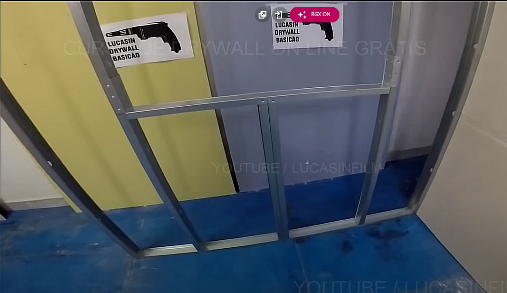

cloud
Drywall
Drywall - 4 Passos para executar o trabalho
- Instalação das guias inferior e superior
- riscar o chão na posição da guia ( levando em conta a espessura da placa<1cm p/ trás> )
-
transferir para o teto essa medida com o nível a laser
- com o nível de bolha, tirar a medida nas duas faces:
- frente e lado
-
Fixação da guia de baixo
- 1 parafuso em cada ponta
- 1 parafuso à cada 1 metro
- banda acústica sempre atrás da guia (entre o chão e a guia)
- Instalação dos montantes
- Instalação:
- Instalação dos montantes fixos das extremidades
-
distância entre os montantes internos
- chapas st: 60cm
- chapas ru: 40cm
- faz a marcação de corte da altura dos montantes com 0.5cm de folga
- corta primeiro as laterais
- dobra na posição do meio e corta a frente
- acerta as beiradas do corte com o alicate
- os montantes devem estar com a parte aberta no sentido oposto ao do chapeamento
- os furos dos montantes devem estar alinhados
- fixa os montantes do projeto
- a fixação dos montantes internos devem permanecer soltos até a instalação do chapeamento
-
para montantes com pé direito alto
- as partes do montante devem ser emendados com uma parte de guia de 60cm com 30cm para cada lado do transpasse
- cada transpasse deve ser fixado com dois parafusos dos dois lados
- na hora da montagem as emendas devem estar desencontradas em ralação aos montantes
- Instalação de cargas em drywall
- o reforço deve ser feito com madeiras tratadas contra fungos e cupins
- medias: 60cm x 20cm
- faz a marcação do eixo na madeira e nos montantes
- 3 parafusos em cada lado
- para até 30kg: buchas toggle bolt
- para pesos maiores: montantes duplos, um de costas para o outro
- paredes em L
- a parede B não deve ser encostada na parede A, deve ser levado em conta a expessura da chapa também
- os montantes da parede B devem ser instalados à 60cm entre: com referencia ao montante da parede A

- Janelas
- são instalados dois montantes como batentes da janela
- ambos com o lado aberto voltado para dentro
- respeitando o espaço de 60cm, devem ser instalados os montantes auxiliares
- 
- para janelas coladas com espuma, a estrutura pode ser deixada no aço mesmo
- para janelas com trilhos do vidro, deve ser feito o chapeamento e o tratamento de quina
- nas áreas das curvas da janela ou porta, não deve ter as emendas, deve ser inteira
- Instalação das chapas drywall
- as placas não devem ser fixadas encostando no chão
- a primeira placa deve começar inteira de baixo para cima
- a distancia entre os parafusos deve ser: 30cm
- nas pontas não coloca parafusos
- nas extremidades os parafusos devem formar um triangulo
- os parafusos de uma placa deve ser desencontrado com os da outra
- as placas devem ser desencontradas
- na parte de trás a placa também deve ser desencontrada com a do outro lado
- Tratamento das juntas ( fita e massa )
- Materiais:
- espatulas
- pequena para pegar massa
- média: 20cm, para fazer o tratamento no rebaixo
- grande: 30cm, para topo e segurar a massa
- fita para tratamento
- fita de papel microperfurada
- fita telada: para reparos
- massa para tratamento de juntas de drywall
- Tratamento:
- tratar primeiro todas as juntas de rebaixo
- nas juntas de topo fazer uma camada extra maior para desfarçar o desnível da fita
- quinas:
- perfuração na segunda fileira de furos
- parafusos desencontrados e a cada 40cm
- 1° demão com massa para tratamento drywall
- 2° demão com massa corrida
- Elétrica básica
Tipos de guias e montantes
- 48mm: paredes e mobiliário
- 70mm: paredes com portas
- 90mm: parede de pé direito alto